1과목: 원자력기초
1. UO2 핵연료(농축도 2.5 w/o) 90톤이 장전된 원자로가 600일 동안 3,300 MW 출력 수준으로 운전하였을 때 비연소도(specific burnup, MWd/t)는?
2. 중수로에 대한 설명으로 옳은 것은?
3. 다음 중 좋은 감속재의 요건이 아닌 것은?
4. 원자로가 아래의 그림과 같이 100% 출력으로 운전하던 중 t0에서 정지한 경우, 원자로 정지 후 제논(135Xe)의 거동으로 적절한 것은? (단, 원자로는 t0에서 정지 이후 재기동을 하지 않는다.)
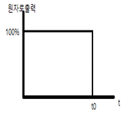
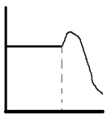
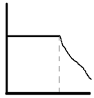
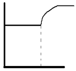
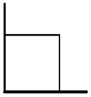
5. 원자핵의 결합에너지에 대한 설명으로 옳지 않은 것은?
6. 235U가 핵분열을 일으킬 때 방출되는 에너지 중 가장 큰 것은?
7. 감속재에 관한 설명으로 옳지 않은 것은?
8. 증배계수와 각 인자에 대한 설명으로 옳지 않은 것은?
9. 어떤 매질 내에서의 거시적 수송 단면적(macroscopic transport cross-section)이 0.45cm-1일 때, 확산방정식의 중성자속 계산에서 고려하는 매질 경계에서의 외삽거리(extrapolation distance)는?
10. 높이 H, 반경 R인 유한 실린더 형태 원자로의 축방향 및 반경방향 중성자속의 형태는?
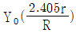
, 반경방향: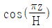
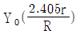
, 반경방향: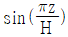
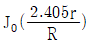
, 반경방향: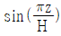
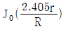
, 반경방향: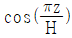
11. 도플러효과에 가장 큰 영향을 받는 반응도계수는?
12. 즉발임계상태인 원자로에 0.001 △k/k의 반응도가 주입되었다. 1초 후 출력은? (단, 지발중성자의 생성은 무시, 즉발중성자의 세대시간은 10-4초이다.)
13. 원자력과 관련된 입자에 대한 설명으로 옳지 않은 것은?
14. 원자로 내에서 핵분열 과정을 통해 생성된 물질의 에너지 중 회수되는 것이 아닌 것은?
15. 지발중성자에 대한 설명으로 옳지 않은 것은?
16. 중성자를 포함하는 매질 내 임의의 체적 V에서의 중성자 거동을 나타낸 항들이 다음과 같이 주어질 때 이들의 관계식으로 옳은 것은?
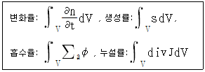
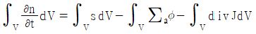
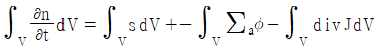
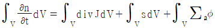
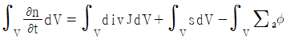
17. 어느 물질의 미시적 단면적(microscopic cross section)은 4.50×10-24 cm2이며, 수밀도(atomic density)는 3.20×1023/cm3일 때, 이 물질의 평균자유행정(mean free path)은?
18. 탄소(12C)를 감속재로 사용하는 원자로에서, 2MeV의 중성자가 1eV의 열중성자로 감속되기 위해 필요한 평균충돌횟수는? (단, ξ = 2/(A+2/3)이다.)
19. 50MW의 일정한 출력으로 운전되는 235U가 장전된 원자로가 제어봉에 의해 10%의 반응도가 갑작스럽게 주입되어 정지되었다. 10분 후 이 원자로의 출력은 어느 정도까지 감소되는가? (단, 원자로 주기(T)는 80초이다.)
20. 다음 중 반사체를 설치하는 경우에 대한 효과가 아닌 것은?
2과목: 핵재료공학 및 핵연료관리
21. 국내에서 생산하는 가압경수로 핵연료 제조공정 중 첫째 공정은?
22. 핵연료 주기 관련 용어와 그에 대한 설명으로 옳지 않은 것은?
23. 다음 중에서 트램프(Tramp) 우라늄에 포함되는 것은 몇 개인가?
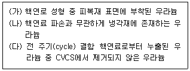
24. 핵연료 농축 공장에서 천연우라늄(235U 농축도 0.7 wt%)으로부터 4wt% 농축 우라늄 100kg을 생산하려고 한다. 농축 후 천연 우라늄 찌꺼기(Tails) 농축도가 0.2wt%일 때, 필요한 천연우라늄 양은?
25. 국내 경수로에서 이행하는 방사화 부식생성물질 제어방법과 거리가 먼 것은?
26. 이산화우라늄 핵연료의 특징으로 옳지 않은 것은?
27. 핵연료 피폭재로 사용되는 지르칼로이에 대한 설명으로 옳지 않은 것은?
28. 사용후핵연료의 재처리 목적이 아닌 것은?
29. 60Co이 포함된 고체 방사성폐기물(단일핵종 오염)이 발생하였다. 이 폐기물이 극저준위 방사성폐기물에 해당하는 농도 범위는? (단, 60Co 자체처분 농도 기준은 0.1Bq/g이다.)(문제 오류로 가답안 발표시 2번으로 발표되었지만 확정답안 발표시 모두 정답처리 되었습니다. 여기서는 가답안인 2번을 누르면 정답 처리 됩니다.)
30. 국내 경수로 원전에서 액체방사성폐기물(액체방사성유출물) 배출(단위:TBq)시에 가장 많이 배출되는 방사성핵종은?
31. 선행 핵연료 주기에 관한 내용으로 옳지 않은 것은?
32. 핵연료 소결체와 피복재의 상호작용에 의한 피폭재 파손을 줄이기 위한 방법이 아닌 것은
33. UF6 기체를 사용하지 않아도 되는 우라늄 농축방법은?
34. 경수로 핵연료 집합체 부품 중에서 아래의 모든 기능을 수행하는 것은?
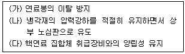
35. 원자로냉각재 내에 존재하는 방사화 부식 생성물질이 아닌 것은?
36. 핵연료 결함 진단에 사용하는 옥소(Iodine)의 물리적, 화학적 특성으로 옳지 않은 것은?
37. 천연우라늄을 핵연료로 사용하며 100MWe의 전력을 생산하는 원자로의 가동률이 80%이며, 열효율이 40%일 때, 이 원자로에서 1일간 소비하는 천연우라늄 양은? (단, 핵연료 1MT당 6,600MWd의 열을 생산한다고 가정한다.)
38. 경수로 사용후핵연료의 핵적 특성에 대한 설명으로 옳지 않은 것은?
39. 방사성핵종인 세슘이 어떤 지하매질에 흡착되어 평형을 이루고 있을 때의 지연계수는? (단, 지하매질의 밀도는 2g/cm3, 유효공극률은 0.5이며, 세슘의 분배계수는 4cm3/g이다.)
40. 사용후핵연료 재처리 공정 중 습식법이 아닌 것은?
3과목: 발전로계통공학
41. 30mm인 원관 속으로 20℃ 물이 층류로 흐른다고 가정할 때, 최대 평균 유속은? (단, 임계 레이놀드수는 2,100이고, 20℃ 물의 동점성계수는 1×10-6m2/s이다.)
42. 다음은 풀비등(Pool boiling)에서 열의 이동현상을 나타낸 열전달곡선이다. 영역 Ⅰ~Ⅳ에 대한 설명으로 옳지 않은 것은?
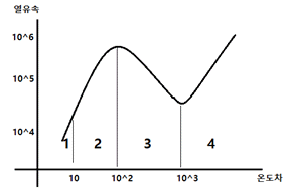
43. 표준형 원자력발전소의 원자로냉각재계통 구성기기에 대한 설멸 중으로 옳지 않은 것은?
44. 표준형 원자력발전소의 정지냉각계통에 대한 설명으로 옳지 않은 것은?
45. 표준형 원자력발전소의 화학 및 체적제어계통(CVCS) 구성기기 중 붕소농도 제어에 사용되지 않은 기기는?
46. 표준형 원자력발전소의 노심운전제한치감시계통(COLSS)에서 감시하는 운전제한치가 아닌 것은?
47. 가압경수로형 원자력발전소에서 381cm 높이의 연료봉이 236개 장입된 연료집합체 177다발을 장전하여 운전하고자 한다. 전 출력 운전 중에 핵비등이탈률(DNBR)은 2.0을 유지하고, 원자로심 중앙에서의 고온열수로계수(Hot Channel Factor)는 2.5이다. 원자로 전체의 평균열속(Averge Heat Flux)이 200,000 BTU/h-ft2이라면 핵비등이탈열속(DNB Heat Flux)은?
48. 정상운전 중인 가압경수로형 원자력발전소에서 핵연료 손상 여부를 판단하는 방법이 아닌 것은?
49. 다음 중 가압열충격(Pressurized Themal Stress)을 줄이기 위한 접근법이 아닌 것은?
50. 핵연료봉에 헬륨(He) 기체를 가압하여 충전하는 이유가 아닌 것은?
51. 이상적인 랭킨 사이클로 운전되는 원자력발전소의 1차계통을 통과하는 유량률이 0.64×108 kg/h이다. 원자로 입구와 출구의 온도는 각각 293℃와 315℃이며 비열은 5.9 J/g-℃이다. 그리고 복수기를 통과하는 유량률은 1.0×108 kg/h이며 복수기 입구와 출구의 온도는 각각 18℃와 30℃이며 비열은 4.2 J/g-℃이다. 발전소 2차계통의 열효율은?
52. 열전달 상관식인 Dittus-Boelter correlation에서 나타나지 않는 무차원 수는?
53. 가압중수로(CANDU)형 원전의 특징이 아닌 것은?
54. 정격 열출력이 2,815 MWth인 원자로의 연료봉 평균 선출력밀도는? (단, 원자로에는 177개 연료집합체가 장전되어 있고, 연료 집합체당 236개 핵연료봉이 있으며, 연료봉 1개당 유효 연료길이는 3.81m이다.)
55. 정상운전 중인 가압경수로형 원자력발전소에서 가압기의 압력을 조절하기 위한 설비가 아닌 것은?
56. 가압경수로형 원자력발전소에서 증기발생기의 수위 팽창 현상을 일으키지 않는 것은?
57. 가압경수로형 원자력발전소에서 화학 및 체적제어계통(CVCS)의 반응도 제어에 대한 설명으로 옳지 않은 것은?
58. 가압경수로형 원자력발전소에서 공학적안전설비(ESF) 계통에 속하지 않은 것은?
59. 표준형 원자력발전소에서 원자로보호계통(RPS)의 자동 원자로정지 신호 중 우회(Bypass)기능이 있는 신호는?
60. 표준형 원자력발전소에서 노외 중성자속 감시계통의 원자로 출력신호 중 가장 넓은 범위를 지시하는 것은?
4과목: 원자로 안전과 운전
61. 아래의 사고사례에 대한 공통적인 설명으로 옳은 것은?
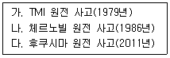
62. 100% 출력으로 운전 중이던 원자력발전소에서 원자로가 불시에 정지되었을 때 핵분열생성물의 부(-)반응도 영향이 가장 큰 시점은?
63. 붕소 동위원소 10B에 대한 설명으로 옳지 않은 것은?
64. 잉여반응도에 대한 설명으로 옳지 않은 것은?
65. 가압경수로형 원자력발전소 운영기술지침서의 안전제한치(Safety Limits) 설정 항목으로 옳은 것은?
66. 정지여유도(Shut Down Margin, SDM)에 대한 설명으로 옳지 않은 것은?
67. 아래에서 설명하는 중대사고 현상은?
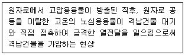
68. 국제원자력사건등급(International Nuclear Event Scale, INES)에 대한 설명으로 옳은 것은?
69. 미국원자력학회(ANS)에서 구분하는, 발전소의 네 가지 상태 중 상태 II(Condition Ⅱ- Faults of Moderate Frequency)에 해당하는 것은?
70. 현재 원자로 열출력이 2MWth이고 기동률이 0.5DPM(Decade Per Minutes)일 때, 4분 후의 원자로 출력은?
71. 아래의 설명에서 괄호 안에 들어갈 용어는?
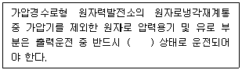
72. 가압경수로형 원자력발전소의 원자로압력용기 무연성 천이온도를 확인하기 위한 감시시편에 대한 설명으로 옳지 않은 것은?
73. 원자로 내 핵연료 장전량이 70 MTU이고 80% 출력으로 200일간 운전하였다면 노심 연소도(Core Burn-up)는? (단, 100% 열출력은 2,825MWth, 발전기 출력은 1,040MWe이다.)
74. 가압경수로형 원자력발전소의 핵연료 재장전 후 출력운전 초기 며칠간 노심의 반응도가 급격히 감소하는데 가장 크게 영향을 미치는 인자는?
75. 다음 가연성 독물질에 대한 설명 중 옳지 않은 것은?
76. 다음 중 핵비등이탈(DNB) 운전여유도를 높이는 요인이 아닌 것은?
77. 아래의 원자력발전소의 안전 관련 계통의 설계특성으로 옳은 것은?
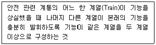
78. '다중고장'의 정의로 옳은 것은?
79. 다음 중 가압열충격(PTS)을 유발할 수 있는, 원자력발전소의 주요 사고가 아닌 것은?
80. 노심 운전주기말(End of Life, EOL)에 정(+)반응도 삽입을 유발하는 사고 유형이 아닌 것은?
5과목: 방사선이용 및 보건물리
81. 방사성 옥소에 대한 방호계수가 20인 전면 방호마스크를 착용하고, 131I의 공기중 농도가 1×105 Bq/m3인 작업장에서 24시간 동안 체류한 사람이 받은 호흡에 의한 예탁유효선량은? (단, 작업자의 호흡률은 1.2m3/h, 131I의 호흡 예탁유효선량 환산계수는 1.1×10-8Sv/Bq이다.)
82. 방사성핵종 분석과 관련하여 감마선 스펙트럼에 대한 설명으로 옳지 않은 것은?
83. 1.33MeV 감마선 입사 시 검출기의 크기가 2차 전자만 측정할 정도로 매우 작을 경우 가장 관찰하기 어려운 피크는?
84. ICRP 103 권고에서 제시한 방사선가중치 중 ICRP 60 권고보다 값이 감소한 방사선은?
85. 다음 중 ICRP 103 권고 기준으로 조직가중치가 가장 높은 장기는?
86. 국제방사선방호위원회(ICRP)에서 채택하고 있는 방사선에 의한 인체 영향 모델은?
87. 다음 중 추적자의 요건으로 옳지 않은 것은?
88. 다음 중 커마(Kerma)에 대한 설명으로 옳게 짝 지은 것은?
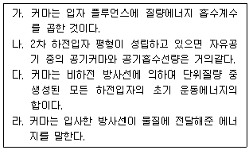
89. X선 발생장치에 대한 차폐시설 설계에 영향을 주는 인자가 아닌 것은?
90. 방사선작업종사자가 트리튬을 섭취한 후의 초기등가선량률이 0.2mSv/h 였다면 예탁유효선량은 약 얼마인가? (단, 트리튬의 유효반감기는 10일이다.)
91. 비용 등을 고려하여 베타선을 가장 효과적으로 차폐하기 위한 차폐체의 배치 순서로 옳은 것은?
92. 기체충전형 검출기에서 방사선의 에너지나 종류에 무관하게 입사 방사선만을 계수하고자 할 때 가장 많이 사용되는 영역은?
93. 방사성 시료 계측 시 최소검출방사능(MDA)을 낮추기 위한 방법으로 옳은 것은?
94. 다음 중 핵종과 결정장기가 옳게 짝 지어진 것은?
95. 시료 계수는 5분 동안 510 counts 이고 백그라운드 계수는 1시간 동안 2,400 counts이다. 시료의 순계수율과 표준편차로 옳은 것은?
96. 괄호 안에 들어갈 것으로 옳게 짝 지어진 것은?
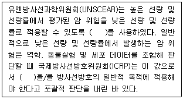
97. 다음 중 반도체 검출기의 특징으로 옳은 것은?
98. 시료 및 백그라운드 계수를 총 2시간 동안 하려고 한다. 백그라운드 계수율이 15cpm이고 시료 계수율이 60cpm일 때 통계적 계수 오차를 최소화하기 위한 백그라운드 계수 시간(Tb)과 시료 계수 시간(Ts)으로 옳은 것은?
99. NaI(T1) 섬광계수기를 사용하여 60Co 감마선을 측정할 때 1.33MeV 에너지에 대한 반치폭(FWHM)이 3keV이다. 이 검출기의 % 분해능은 약 얼마인가?
100. 1 MeV의 감마선의 강도를 1/50으로 줄이기 위한 차폐 콘크리트의 두께는 약 얼마인가? (단, 1MeV 감마선에 대한 콘크리트의 질량감쇠계수 및 밀도는 각각 0.06495cm2/g, 2.35g/cm3이고 축적인자(Build up factor)는 무시한다.)